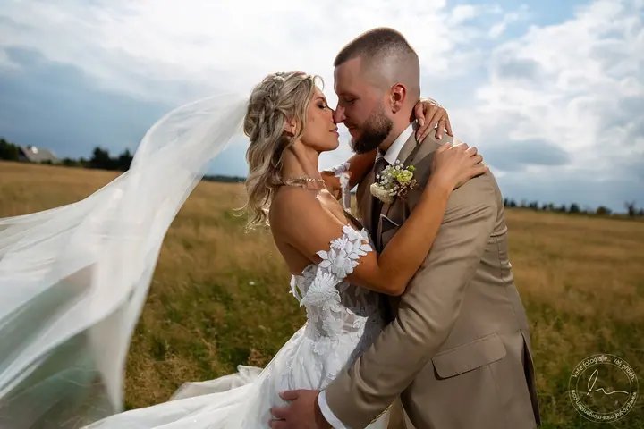
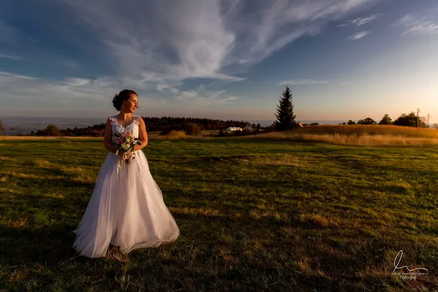

jedna
Svatební focení
Na svatby jezdíme jako otec a syn, takže váš den zachytíme ze dvou pohledů. Vybírat můžete z balíčků od 4 do 12 hodin a jako doplněk nabízíme i svatební video.

Svatební fotograf s ateliérem v Mostě · Most, Teplice, Praha

Jmenuji se Míra Morgenstern a fotím už 15 let. Na svatby jezdím se synem, takže váš den zachytíme ze dvou pohledů. V ateliéru v Mostě pak fotím miminka, maminky v očekávání i celé rodiny.
Více o mně
Co fotím
jedna
Na svatby jezdíme jako otec a syn, takže váš den zachytíme ze dvou pohledů. Vybírat můžete z balíčků od 4 do 12 hodin a jako doplněk nabízíme i svatební video.
Novorozence fotím v ateliéru v Mostě, nejlépe do 14 dnů od narození, kdy hodně spí. Focení obvykle trvá 1 až 1,5 hodiny.
Fotit můžeme v útulném ateliéru nebo venku v přírodě. V balíčku Exclusive je i líčení, úprava vlasů a půjčení šatů z ateliérového šatníku.
Rodiny, děti, portréty, páry, fashion a glamour v ateliéru se zábleskovými světly, různými pozadími a rekvizitami. Venku fotím rodiny, páry a také focení s koňmi a jinými zvířaty.
Celý den od příprav až po první tanec.


Za objektivem
Jmenuji se Míra Morgenstern a fotím už 15 let. Fotografie je u nás rodinná věc. Na svatby jezdíme se synem jako otec a syn, každý se svým pohledem, aby z vašeho dne nic důležitého neuteklo. Kdo chce, může si k fotkám přidat i video.
V Mostě mám moderní ateliér se zábleskovými světly, různými pozadími a rekvizitami. Fotím tu novorozence, těhotenské portréty, rodiny, děti a také fashion a glamour. Na těhotenském a ateliérovém focení se o vás stará i naše vizážistka. Když je hezky, rád vyrazím ven. Do přírody, do města nebo za koňmi.
Fotky neodpočítávám podle tabulky. Ze svatby dostanete všechny povedené a upravené fotografie, protože každá svatba je jiný příběh. Fotím hlavně v Mostě, Teplicích, Chomutově, Ústí, Karlových Varech a v Praze, ale na svatby jezdím po celé republice.
Míra
Napište mi nebo zavolejte datum a místo svatby. Hned vám řeknu, jestli máme volno.
Domluvíme se, jak dlouho s vámi budeme. Od komorního obřadu na 4 hodiny až po celý den od ranního líčení po večerní party.
Přijedeme se synem a fotíme ze dvou úhlů. Jeden zachytí obřad zepředu, druhý emoce hostů a detaily.
Pošleme vám všechny povedené fotky, profesionálně upravené. Pokud si přiobjednáte video, dostanete i to.
Portfolio
Otázky
Balíčky pro rok 2026 začínají na 12 000 Kč za 4 hodiny. Základní příběh na 8 hodin stojí 15 000 Kč, Standardní na 10 hodin 19 000 Kč a Exkluzivní na 12 hodin 23 000 Kč.
Fotky nepočítám. Dostanete všechny povedené a profesionálně upravené fotografie z celého dne.
Ano, video nabízíme jako doplněk k fotografickým balíčkům. Rádi vám ho připravíme na míru.
Nejlépe hned z porodnice, pokud vám to zdravotní stav dovolí. Fotíme ideálně do 14 dnů od narození, kdy miminka nejvíc spí. Focení trvá 1 až 1,5 hodiny.

Napište pár vět o tom, co si představujete. · +420 774 299 097